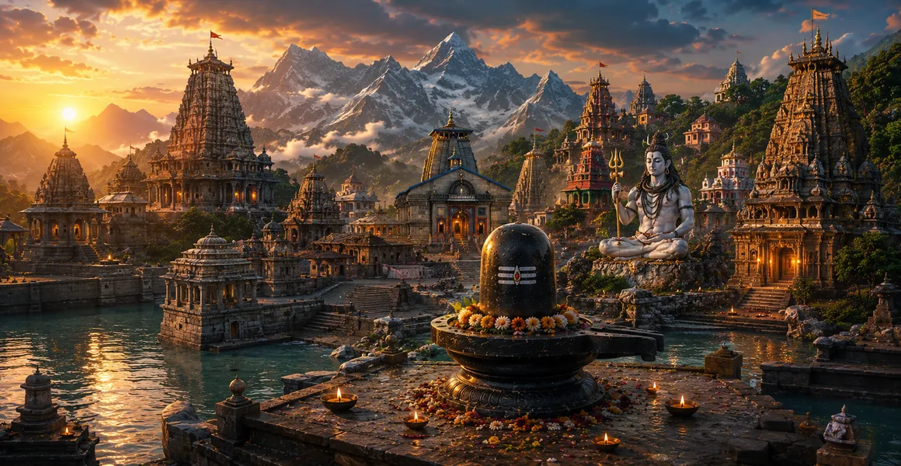

Famous Lord Shiva Temples
ভগবান শিবের বিখ্যাত মন্দিরসমূহ
प्रसिद्ध भगवान शिव मंदिर
Across India, countless temples preserve living traditions of worship, pilgrimage, music, ritual, architecture, and remembrance of Lord Shiva. Some are celebrated as Jyotirlingas, some as ancient architectural masterpieces, and others as beloved regional centres of devotion.
यह पृष्ठ प्रसिद्ध शिव मंदिरों का भक्तिपूर्ण चयन प्रस्तुत करता है। यह संपूर्ण कैटलॉग नहीं है. प्रत्येक मंदिर का अपना पवित्र वातावरण, स्थानीय परंपरा, शिव का रूप, वास्तुकला और भक्तों के साथ संबंध होता है।
शिव मंदिरों का महत्व
जीवित पूजा
एक शिव मंदिर प्रार्थना, प्रसाद, दर्शन और स्मरण का एक जीवंत स्थान हो सकता है।
शिव के अनेक रूप
महादेव की पूजा कई पवित्र रूपों और भक्ति परंपराओं के माध्यम से की जाती है।
पवित्र परंपरा
मंदिर अनुष्ठानों, त्योहारों, कहानियों, संगीत, कला और स्थानीय शैव परंपराओं को संरक्षित करते हैं।
याद रखने लायक जगह
शिव मंदिर में प्रवेश करना हृदय को महादेव की ओर मोड़ने का एक सरल कार्य बन सकता है।
मंदिर मार्गदर्शिका
- 01काशी विश्वनाथ मंदिर→
- 02केदारनाथ मंदिर→
- 03सोमनाथ मंदिर→
- 04महाकालेश्वर मंदिर→
- 05बृहदीश्वर मंदिर→
- 06लिंगराज मंदिर→
- 07रामनाथस्वामी मंदिर→
- 08बैद्यनाथ धाम→
- 09मल्लिकार्जुन मंदिर→
- 10त्र्यंबकेश्वर मंदिर→
- 11भीमाशंकर मंदिर→
- 12नागेश्वर मंदिर→
- 13ओंकारेश्वर मंदिर→
- 14घृष्णेश्वर मंदिर→
- 15मुक्तेश्वर मंदिर→
- 16तारकेश्वर मंदिर→
- 17अमरनाथ गुफा→
- 18चिदम्बरम नटराज मंदिर→
- 19कैलासनाथर मंदिर→
- 20एकंबरेश्वर मंदिर→
- 21कपालेश्वर मंदिर→
- 22काल भैरव मंदिर→
- 23जागेश्वर मंदिर→
काशी विश्वनाथ मंदिर
स्थान: वाराणसी, उत्तर प्रदेश
काशी विश्वनाथ भारत के सबसे प्रतिष्ठित शिव मंदिरों में से एक है और वाराणसी की पवित्र पहचान से गहराई से जुड़ा हुआ है। यह मंदिर ब्रह्मांड के भगवान विश्वनाथ को समर्पित है। गंगा के किनारे इसकी स्थापना तीर्थयात्रा को प्रार्थना, स्मरण और पवित्र निरंतरता का एक शक्तिशाली वातावरण प्रदान करती है। श्रद्धालु दर्शन, पूजन और काशी की जीवंत शैव परंपरा के लिए आते हैं।
भक्त के लिए मंदिर का पवित्र महत्व उसकी भौतिक संरचना तक ही सीमित नहीं है। प्रार्थना, दीपक, फूल, घंटियाँ, मंत्र, प्रसाद, त्यौहार और शांत दर्शन के क्षण इस यात्रा को महादेव की व्यक्तिगत स्मृति में बदल सकते हैं।
केदारनाथ मंदिर
स्थान: केदारनाथ, उत्तराखण्ड
केदारनाथ उच्च हिमालय के बीच स्थित है और भगवान शिव के सबसे महत्वपूर्ण तीर्थस्थलों में से एक है। पहाड़ की यात्रा अपने आप में इसके आध्यात्मिक चरित्र का हिस्सा बन गई है, जिसके लिए धैर्य, विश्वास और दृढ़ता की आवश्यकता होती है। यह मंदिर पारंपरिक रूप से शिव के साथ केदारनाथ के रूप में जुड़ा हुआ है। इसका सुदूर परिदृश्य मौन, विनम्रता और महादेव की याद को प्रोत्साहित करता है।
भक्त के लिए मंदिर का पवित्र महत्व उसकी भौतिक संरचना तक ही सीमित नहीं है। प्रार्थना, दीपक, फूल, घंटियाँ, मंत्र, प्रसाद, त्यौहार और शांत दर्शन के क्षण इस यात्रा को महादेव की व्यक्तिगत स्मृति में बदल सकते हैं।
सोमनाथ मंदिर
स्थान: प्रभास पाटन, गुजरात
सोमनाथ गुजरात के तट पर एक प्राचीन और अत्यधिक पूजनीय शिव मंदिर है। इसे पारंपरिक रूप से बारह ज्योतिर्लिंगों में गिना जाता है और इसे महादेव की उज्ज्वल अभिव्यक्ति के रूप में याद किया जाता है। मंदिर का अरब सागर से संबंध तीर्थयात्रा को विशालता का अद्भुत अहसास कराता है। सोमनाथ स्थायी भक्ति और नवीनीकरण के एक शक्तिशाली प्रतीक के रूप में भी खड़ा है।
भक्त के लिए मंदिर का पवित्र महत्व उसकी भौतिक संरचना तक ही सीमित नहीं है। प्रार्थना, दीपक, फूल, घंटियाँ, मंत्र, प्रसाद, त्यौहार और शांत दर्शन के क्षण इस यात्रा को महादेव की व्यक्तिगत स्मृति में बदल सकते हैं।
महाकालेश्वर मंदिर
स्थान: उज्जैन, मध्य प्रदेश
महाकालेश्वर, समय के देवता, महाकाल के रूप में शिव का प्रसिद्ध मंदिर है। उज्जैन में स्थित यह मध्य भारत के पवित्र भूगोल में महत्वपूर्ण स्थान रखता है। यहां पूजा करने से समय, नश्वरता, भय और शिव की शाश्वत प्रकृति पर चिंतन होता है। यह मंदिर अपनी विशिष्ट भक्ति परंपराओं और दैनिक पूजा के लिए भी प्रसिद्ध है।
भक्त के लिए मंदिर का पवित्र महत्व उसकी भौतिक संरचना तक ही सीमित नहीं है। प्रार्थना, दीपक, फूल, घंटियाँ, मंत्र, प्रसाद, त्यौहार और शांत दर्शन के क्षण इस यात्रा को महादेव की व्यक्तिगत स्मृति में बदल सकते हैं।
बृहदीश्वर मंदिर
स्थान: तंजावुर, तमिलनाडु
बृहदीश्वर भगवान शिव को समर्पित एक विशाल मंदिर है और यह दक्षिण भारतीय मंदिर वास्तुकला की महान उपलब्धियों में से एक है। इसका विशाल विमान और भव्य पत्थर निर्माण शैव भक्ति की एक शक्तिशाली दृश्य अभिव्यक्ति बनाते हैं। यह मंदिर चोल स्थापत्य परंपरा से संबंधित है और एक महत्वपूर्ण पवित्र और सांस्कृतिक स्थल बना हुआ है। इसका पैमाना शिव की महिमा और उस भक्ति पर चिंतन को आमंत्रित करता है जिसने ऐसी असाधारण शिल्प कौशल को प्रेरित किया।
भक्त के लिए मंदिर का पवित्र महत्व उसकी भौतिक संरचना तक ही सीमित नहीं है। प्रार्थना, दीपक, फूल, घंटियाँ, मंत्र, प्रसाद, त्यौहार और शांत दर्शन के क्षण इस यात्रा को महादेव की व्यक्तिगत स्मृति में बदल सकते हैं।
लिंगराज मंदिर
स्थान: भुवनेश्वर, ओडिशा
लिंगराज मंदिर ओडिशा के सबसे महत्वपूर्ण ऐतिहासिक शिव मंदिरों में से एक है। इष्टदेव की पूजा लिंगराज के रूप में की जाती है, जो कि शिव का एक पवित्र रूप है जो भुवनेश्वर के धार्मिक जीवन में गहराई से जुड़ा हुआ है। मंदिर परिसर विशिष्ट कलिंग वास्तुकला परंपरा को दर्शाता है। इसके अनुष्ठान, त्यौहार और प्राचीन वातावरण इसे महादेव के भक्तों के लिए एक महत्वपूर्ण गंतव्य बनाते हैं।
भक्त के लिए मंदिर का पवित्र महत्व उसकी भौतिक संरचना तक ही सीमित नहीं है। प्रार्थना, दीपक, फूल, घंटियाँ, मंत्र, प्रसाद, त्यौहार और शांत दर्शन के क्षण इस यात्रा को महादेव की व्यक्तिगत स्मृति में बदल सकते हैं।
रामनाथस्वामी मंदिर
स्थान: रामेश्वरम, तमिलनाडु
रामनाथस्वामी मंदिर, रामेश्वरम के सबसे प्रसिद्ध शिव मंदिरों में से एक है और भगवान राम की पवित्र परंपराओं से निकटता से जुड़ा हुआ है। यह रामेश्वर ज्योतिर्लिंग परंपरा से भी जुड़ा है। यह मंदिर अपने विशाल गलियारों, पवित्र कुओं और तीर्थ अनुष्ठानों के लिए प्रसिद्ध है। रामभक्ति और शिवपूजा का मिलन इस तीर्थ को एक विशिष्ट भक्तिमय चरित्र प्रदान करता है।
भक्त के लिए मंदिर का पवित्र महत्व उसकी भौतिक संरचना तक ही सीमित नहीं है। प्रार्थना, दीपक, फूल, घंटियाँ, मंत्र, प्रसाद, त्यौहार और शांत दर्शन के क्षण इस यात्रा को महादेव की व्यक्तिगत स्मृति में बदल सकते हैं।
बैद्यनाथ धाम
स्थान: देवघर, झारखण्ड
बैद्यनाथ धाम भगवान शिव को समर्पित प्रमुख तीर्थस्थलों में से एक है और पारंपरिक रूप से वैद्यनाथ ज्योतिर्लिंग से जुड़ा हुआ है। यहां शिव को दिव्य उपचारक के रूप में याद किया जाता है, जिससे यह मंदिर शक्ति और अनुग्रह चाहने वाले भक्तों के लिए विशेष रूप से सार्थक हो जाता है। यह मंदिर पूर्वी भारत की एक प्रमुख तीर्थ परंपरा के केंद्र में है। बैद्यनाथ में प्रार्थना और भेंट को अक्सर महादेव के समक्ष समर्पण के रूप में अनुभव किया जाता है।
भक्त के लिए मंदिर का पवित्र महत्व उसकी भौतिक संरचना तक ही सीमित नहीं है। प्रार्थना, दीपक, फूल, घंटियाँ, मंत्र, प्रसाद, त्यौहार और शांत दर्शन के क्षण इस यात्रा को महादेव की व्यक्तिगत स्मृति में बदल सकते हैं।
मल्लिकार्जुन मंदिर
स्थान: श्रीशैलम, आंध्र प्रदेश
श्रीशैलम का मल्लिकार्जुन मंदिर दक्षिणी भारत के महान शिव तीर्थस्थलों में से एक है। यह मंदिर पारंपरिक रूप से मल्लिकार्जुन ज्योतिर्लिंग से जुड़ा हुआ है और नल्लामाला पहाड़ियों के बीच स्थित है। पवित्र परिदृश्य पहाड़, मंदिर, नदी और प्राचीन भक्ति परंपराओं को जोड़ता है। यहां पूजा भक्तों को प्रेम, विनम्रता और समर्पण के साथ शिव के पास जाने के लिए आमंत्रित करती है।
भक्त के लिए मंदिर का पवित्र महत्व उसकी भौतिक संरचना तक ही सीमित नहीं है। प्रार्थना, दीपक, फूल, घंटियाँ, मंत्र, प्रसाद, त्यौहार और शांत दर्शन के क्षण इस यात्रा को महादेव की व्यक्तिगत स्मृति में बदल सकते हैं।
त्र्यंबकेश्वर मंदिर
स्थान: त्र्यंबक, महाराष्ट्र
त्र्यंबकेश्वर गोदावरी के स्रोत क्षेत्र के पास एक प्रमुख शिव मंदिर है और एक ज्योतिर्लिंग मंदिर के रूप में प्रतिष्ठित है। यह नाम तीन आंखों वाले भगवान शिव, त्र्यंबक से जुड़ा है। आसपास की पहाड़ियाँ और पवित्र जल तीर्थयात्रा को प्रकृति और पवित्र भूगोल के साथ एक मजबूत संबंध प्रदान करते हैं। भक्त यहां शिव की आंतरिक दृष्टि, ज्ञान और आध्यात्मिक जागृति पर विचार कर सकते हैं।
भक्त के लिए मंदिर का पवित्र महत्व उसकी भौतिक संरचना तक ही सीमित नहीं है। प्रार्थना, दीपक, फूल, घंटियाँ, मंत्र, प्रसाद, त्यौहार और शांत दर्शन के क्षण इस यात्रा को महादेव की व्यक्तिगत स्मृति में बदल सकते हैं।
भीमाशंकर मंदिर
स्थान: महाराष्ट्र
भीमाशंकर सह्याद्रि क्षेत्र में स्थित एक प्रसिद्ध शिव तीर्थस्थल है। इसे पारंपरिक रूप से बारह ज्योतिर्लिंगों में गिना जाता है और यह पहाड़ियों और जंगल के परिदृश्य से घिरा हुआ है। प्राकृतिक परिवेश मंदिर को एक शांत भक्तिमय वातावरण प्रदान करता है। यह मंदिर भक्तों को शिव की सुरक्षात्मक उपस्थिति और पवित्र प्रकृति से पहले विनम्रता के महत्व की याद दिलाता है।
भक्त के लिए मंदिर का पवित्र महत्व उसकी भौतिक संरचना तक ही सीमित नहीं है। प्रार्थना, दीपक, फूल, घंटियाँ, मंत्र, प्रसाद, त्यौहार और शांत दर्शन के क्षण इस यात्रा को महादेव की व्यक्तिगत स्मृति में बदल सकते हैं।
नागेश्वर मंदिर
स्थान: द्वारका के पास, गुजरात
नागेश्वर, नागेश्वर ज्योतिर्लिंग परंपरा से जुड़ा एक प्रतिष्ठित शिव मंदिर है। यह नाम शिव की प्रतिमा विज्ञान के साथ निकटता से जुड़े पवित्र सर्प प्रतीकवाद को उजागर करता है। द्वारका के निकट तटीय परिवेश तीर्थयात्रा में एक विशिष्ट आयाम जोड़ता है। भक्त यहां शिव को एक निडर रक्षक और भय से परे भगवान के रूप में याद करते हैं।
भक्त के लिए मंदिर का पवित्र महत्व उसकी भौतिक संरचना तक ही सीमित नहीं है। प्रार्थना, दीपक, फूल, घंटियाँ, मंत्र, प्रसाद, त्यौहार और शांत दर्शन के क्षण इस यात्रा को महादेव की व्यक्तिगत स्मृति में बदल सकते हैं।
ओंकारेश्वर मंदिर
स्थान: मांधाता, मध्य प्रदेश
ओंकारेश्वर नर्मदा नदी पर एक प्रमुख शिव तीर्थस्थल है और पारंपरिक रूप से ज्योतिर्लिंगों में गिना जाता है। इसकी पवित्र पहचान आदिकालीन पवित्र ध्वनि ओंकार से जुड़ी है। द्वीप के परिदृश्य और नदी एक गहन चिंतनशील वातावरण का निर्माण करते हैं। ओंकारेश्वर में पूजा पवित्र ध्वनि, प्रार्थना और शांति के माध्यम से शिव के स्मरण को प्रोत्साहित करती है।
भक्त के लिए मंदिर का पवित्र महत्व उसकी भौतिक संरचना तक ही सीमित नहीं है। प्रार्थना, दीपक, फूल, घंटियाँ, मंत्र, प्रसाद, त्यौहार और शांत दर्शन के क्षण इस यात्रा को महादेव की व्यक्तिगत स्मृति में बदल सकते हैं।
घृष्णेश्वर मंदिर
स्थान: एलोरा के पास, महाराष्ट्र
घृष्णेश्वर बारह ज्योतिर्लिंगों की सूची में पारंपरिक अंतिम प्रविष्टि है। यह मंदिर एलोरा गुफाओं के पास स्थित है, जो शैव भक्ति, पवित्र परिदृश्य और ऐतिहासिक कला का एक उल्लेखनीय मिलन बिंदु बनाता है। यह मंदिर शिव की कृपा पर केंद्रित भक्ति परंपरा से जुड़ा है। इसकी उपस्थिति भक्तों को याद दिलाती है कि प्रत्येक पवित्र अभिव्यक्ति महादेव के लिए द्वार बन सकती है।
भक्त के लिए मंदिर का पवित्र महत्व उसकी भौतिक संरचना तक ही सीमित नहीं है। प्रार्थना, दीपक, फूल, घंटियाँ, मंत्र, प्रसाद, त्यौहार और शांत दर्शन के क्षण इस यात्रा को महादेव की व्यक्तिगत स्मृति में बदल सकते हैं।
मुक्तेश्वर मंदिर
स्थान: भुवनेश्वर, ओडिशा
मुक्तेश्वर मंदिर, भुवनेश्वर में एक प्रसिद्ध ऐतिहासिक शिव मंदिर है और इसकी परिष्कृत कलिंग वास्तुकला के लिए विशेष रूप से प्रशंसा की जाती है। इसका मूर्तिकला विवरण और सुंदर प्रवेश द्वार पहले के युग की कलात्मक भक्ति को दर्शाते हैं। मुक्तेश्वर नाम शिव को मुक्ति से जुड़े भगवान के रूप में दर्शाता है। मंदिर पवित्र सौंदर्य के चिंतन और स्वतंत्रता की आध्यात्मिक आकांक्षा को आमंत्रित करता है।
भक्त के लिए मंदिर का पवित्र महत्व उसकी भौतिक संरचना तक ही सीमित नहीं है। प्रार्थना, दीपक, फूल, घंटियाँ, मंत्र, प्रसाद, त्यौहार और शांत दर्शन के क्षण इस यात्रा को महादेव की व्यक्तिगत स्मृति में बदल सकते हैं।
तारकेश्वर मंदिर
स्थान: हुगली, पश्चिम बंगाल
तारकेश्वर पश्चिम बंगाल में एक व्यापक रूप से प्रतिष्ठित शिव तीर्थस्थल है। यह मंदिर शिव के प्रिय भक्ति रूप तारकनाथ से जुड़ा है। तीर्थयात्री प्रार्थनाओं, प्रसादों और व्यक्तिगत मन्नतों के साथ यात्रा करते हैं, जिससे आस्था का जीवंत माहौल बनता है। बंगाली शैव भक्ति और तीर्थ संस्कृति में इस मंदिर का विशेष रूप से मजबूत स्थान है।
भक्त के लिए मंदिर का पवित्र महत्व उसकी भौतिक संरचना तक ही सीमित नहीं है। प्रार्थना, दीपक, फूल, घंटियाँ, मंत्र, प्रसाद, त्यौहार और शांत दर्शन के क्षण इस यात्रा को महादेव की व्यक्तिगत स्मृति में बदल सकते हैं।
अमरनाथ गुफा
स्थान: जम्मू और कश्मीर
अमरनाथ गुफा भगवान शिव से जुड़े सबसे प्रसिद्ध हिमालयी तीर्थ स्थलों में से एक है। इसकी पवित्र परंपरा प्राकृतिक रूप से बने बर्फ के लिंग पर केंद्रित है जो तीर्थयात्रा के मौसम के दौरान गुफा में प्रकट होता है। कठिन पहाड़ी यात्रा तपस्या और समर्पण का माहौल जोड़ती है। कई भक्तों के लिए, अमरनाथ हिमालयी प्रकृति, पवित्र कथा और गहन शिव भक्ति के मिलन का प्रतिनिधित्व करता है।
भक्त के लिए मंदिर का पवित्र महत्व उसकी भौतिक संरचना तक ही सीमित नहीं है। प्रार्थना, दीपक, फूल, घंटियाँ, मंत्र, प्रसाद, त्यौहार और शांत दर्शन के क्षण इस यात्रा को महादेव की व्यक्तिगत स्मृति में बदल सकते हैं।
चिदम्बरम नटराज मंदिर
स्थान: चिदम्बरम, तमिलनाडु
चिदम्बरम नटराज मंदिर भारत के सबसे महत्वपूर्ण मंदिरों में से एक है जो ब्रह्मांडीय नर्तक नटराज के रूप में शिव को समर्पित है। मंदिर की परंपराएं शिव के नृत्य को चेतना और ब्रह्मांडीय लय के रहस्य से जोड़ती हैं। इसकी पवित्र वास्तुकला और अनुष्ठान एक विशिष्ट शैव दर्शन को व्यक्त करते हैं। भक्त यहां शिव की छवि को पारलौकिक वास्तविकता और गतिशील ब्रह्मांडीय उपस्थिति दोनों के रूप में देखते हैं।
भक्त के लिए मंदिर का पवित्र महत्व उसकी भौतिक संरचना तक ही सीमित नहीं है। प्रार्थना, दीपक, फूल, घंटियाँ, मंत्र, प्रसाद, त्यौहार और शांत दर्शन के क्षण इस यात्रा को महादेव की व्यक्तिगत स्मृति में बदल सकते हैं।
कैलासनाथर मंदिर
स्थान: कांचीपुरम, तमिलनाडु
कैलासनाथर मंदिर कांचीपुरम में एक प्राचीन शिव मंदिर है और प्रारंभिक दक्षिण भारतीय मंदिर वास्तुकला का एक महत्वपूर्ण स्मारक है। यह मंदिर कैलास पर्वत के स्वामी कैलासनाथर शिव को समर्पित है। इसकी पत्थर की नक्काशी और पवित्र वातावरण शैव भक्ति की स्थायी अभिव्यक्ति को संरक्षित करता है। मंदिर शिव के हिमालय निवास और राजसी दिव्य उपस्थिति की याद को प्रोत्साहित करता है।
भक्त के लिए मंदिर का पवित्र महत्व उसकी भौतिक संरचना तक ही सीमित नहीं है। प्रार्थना, दीपक, फूल, घंटियाँ, मंत्र, प्रसाद, त्यौहार और शांत दर्शन के क्षण इस यात्रा को महादेव की व्यक्तिगत स्मृति में बदल सकते हैं।
एकंबरेश्वर मंदिर
स्थान: कांचीपुरम, तमिलनाडु
एकंबरेश्वर मंदिर कांचीपुरम के प्रमुख शिव मंदिरों में से एक है। यहां शिव की पूजा एकंबरेश्वर के रूप में की जाती है और यह मंदिर शहर की पवित्र परंपराओं से गहराई से जुड़ा हुआ है। इसका विशाल परिसर, विशाल प्रवेश द्वार और प्राचीन पूजा परंपरा इसे एक महत्वपूर्ण तीर्थ स्थल बनाती है। भक्त यहां प्रार्थना, अनुष्ठान और पवित्र स्मृति के माध्यम से शिव को याद करते हैं।
भक्त के लिए मंदिर का पवित्र महत्व उसकी भौतिक संरचना तक ही सीमित नहीं है। प्रार्थना, दीपक, फूल, घंटियाँ, मंत्र, प्रसाद, त्यौहार और शांत दर्शन के क्षण इस यात्रा को महादेव की व्यक्तिगत स्मृति में बदल सकते हैं।
कपालेश्वर मंदिर
स्थान: चेन्नई, तमिलनाडु
कपालीश्वर मंदिर चेन्नई के मायलापुर में एक प्रमुख शिव मंदिर है। शिव को कपालेश्वर के रूप में पूजा जाता है और यह मंदिर तमिल शैव भक्ति संस्कृति से दृढ़ता से जुड़ा हुआ है। इसका रंग-बिरंगा गोपुरम और सक्रिय त्योहार परंपराएं इसे पूजा का जीवंत केंद्र बनाती हैं। मंदिर दर्शाता है कि एक जीवंत आधुनिक शहर में प्राचीन शिव भक्ति कैसे जारी है।
भक्त के लिए मंदिर का पवित्र महत्व उसकी भौतिक संरचना तक ही सीमित नहीं है। प्रार्थना, दीपक, फूल, घंटियाँ, मंत्र, प्रसाद, त्यौहार और शांत दर्शन के क्षण इस यात्रा को महादेव की व्यक्तिगत स्मृति में बदल सकते हैं।
काल भैरव मंदिर
स्थान: वाराणसी, उत्तर प्रदेश
काल भैरव शिव का एक उग्र और सुरक्षात्मक स्वरूप हैं और वाराणसी में उनकी गहरी पूजा की जाती है। यह मंदिर काशी के संरक्षक के रूप में भैरव से जुड़ा हुआ है। भक्त सुरक्षा, साहस और आध्यात्मिक शक्ति की तलाश में श्रद्धा के साथ मंदिर में आते हैं। इसका भक्तिपूर्ण चरित्र पूरे पवित्र शहर में पाए जाने वाले शिव पूजा के सौम्य रूपों का पूरक है।
भक्त के लिए मंदिर का पवित्र महत्व उसकी भौतिक संरचना तक ही सीमित नहीं है। प्रार्थना, दीपक, फूल, घंटियाँ, मंत्र, प्रसाद, त्यौहार और शांत दर्शन के क्षण इस यात्रा को महादेव की व्यक्तिगत स्मृति में बदल सकते हैं।
जागेश्वर मंदिर
स्थान: अल्मोडा, उत्तराखण्ड
जागेश्वर उत्तराखण्ड की हिमालय की तलहटी में प्राचीन शिव मंदिरों का एक पवित्र समूह है। देवदार के जंगलों और पहाड़ी दृश्यों के बीच स्थित मंदिर एक गहन चिंतनशील वातावरण का निर्माण करते हैं। यह परिसर एक महत्वपूर्ण शैव वास्तुकला और तीर्थयात्रा परंपरा को संरक्षित करता है। भक्त पवित्र परिदृश्य को मौन, प्रार्थना और महादेव की याद के निमंत्रण के रूप में अनुभव कर सकते हैं।
भक्त के लिए मंदिर का पवित्र महत्व उसकी भौतिक संरचना तक ही सीमित नहीं है। प्रार्थना, दीपक, फूल, घंटियाँ, मंत्र, प्रसाद, त्यौहार और शांत दर्शन के क्षण इस यात्रा को महादेव की व्यक्तिगत स्मृति में बदल सकते हैं।
शिव मंदिर भक्तों को क्या सिखाते हैं?
पवित्र परिदृश्य
कई शिव मंदिर पहाड़ों, नदियों, जंगलों, समुद्र तटों और प्राचीन शहरों से अविभाज्य हैं।
प्रकाश और प्रार्थना
साधारण भेंटें एक सामान्य क्षण को स्मरण के कार्य में बदल सकती हैं।
त्यौहार और पवित्र कलाएँ
संगीत, नृत्य, मूर्तिकला, जुलूस और त्यौहार अक्सर शब्दों से परे भक्ति व्यक्त करते हैं।
दर्शन और शांति
शिव के हृदय में लौटने से पहले का एक क्षण एक शांत अनुस्मारक बन सकता है।
पीढ़ियों तक भक्ति
निरंतर पूजा वर्तमान भक्तों को उन पीढ़ियों से जोड़ती है जिन्होंने उनसे पहले शिव को याद किया था।
पवित्र स्मृति
एक मंदिर कहानियों और भक्तिपूर्ण यादों को संरक्षित करता है जो साधकों को प्रेरित करते रहते हैं।
"जहां दिल ईमानदारी से महादेव को याद करता है, वह मंदिर पत्थर से भी बढ़कर बन जाता है। वह भक्ति का द्वार बन जाता है।"
पवित्र मंदिरों से लेकर पवित्र स्थानों तक
व्यक्तिगत मंदिरों से आगे बढ़ें और पहाड़ों, नदियों, शहरों, गुफाओं, जंगलों और भगवान शिव से जुड़े अन्य पवित्र स्थानों का पता लगाएं।
🔱भगवान शिव के पवित्र स्थानों का अन्वेषण करेंअक्सर पूछे जाने वाले प्रश्न
1. क्या सभी प्रसिद्ध शिव मंदिर ज्योतिर्लिंग हैं?
नहीं, बारह ज्योतिर्लिंग एक विशिष्ट पूजनीय परंपरा का निर्माण करते हैं। कई अन्य शिव मंदिर अपने इतिहास, शिव के रूप, स्थानीय परंपरा, वास्तुकला या तीर्थ महत्व के लिए प्रसिद्ध हैं।
2. शिव मंदिरों के अलग-अलग रूप और नाम क्यों होते हैं?
शैव परंपराएं शिव के कई पवित्र रूपों और नामों को संरक्षित करती हैं, जिससे भक्तों को विभिन्न भक्ति मूड और क्षेत्रीय परंपराओं के माध्यम से महादेव तक पहुंचने की अनुमति मिलती है।